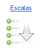

El módulo de Encuestas permite obtener datos a partir de realizar un conjunto de preguntas normalizadas dirigidas a estudiantes y/o tutores, con el fin de conocer estados de opinión, características o hechos específicos. El encuestador debe definir las preguntas más convenientes, de acuerdo con la naturaleza de su investigación.
 Categorías
Las categorías de preguntas, permiten definir distintos tipos u ámbitos en los cuales se orientan un grupo de preguntas, como pueden ser: Seguridad, Higiene, Puntualidad, etc.
|
 Encuestas
Permite realizar un estudio observacional de las diversas asignaturas y de la institución. El encuestador busca recaudar datos por medio de un cuestionario prediseñado dirigido a estudiantes y/o tutores.
|
 Escalas

Las escalas se orientan a definir distintos tipos de preguntas que cuentan con respuestas "cerradas", en estas los encuestados deben elegir para responder una de las opciones que se presentan en un listado.
Por otro lado, el encuestador podrá definir también preguntas con respuestas "abiertas" o de tipo textual, donde se le pide al interrogado que responda el mismo a la pregunta formulada.
|
|